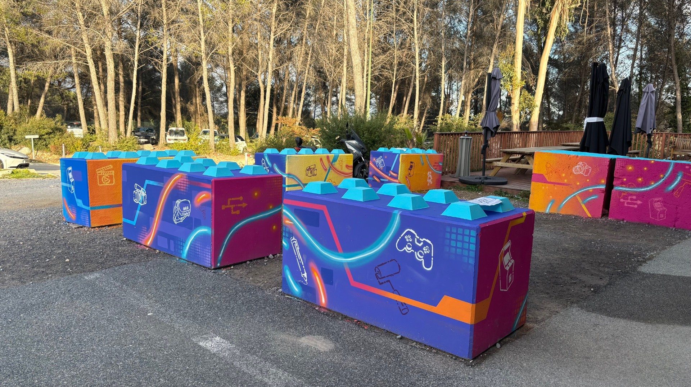
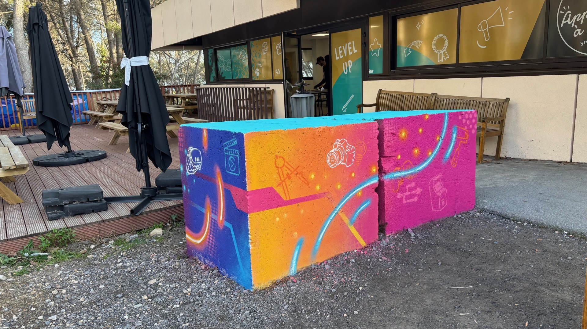

Concept
Cet atelier graffiti s'inscrit dans le cadre de l'association culturelle Yfabrick, espace dédié à l'exploration des arts urbains et à la transmission de leurs codes. L'expérience propose une immersion dans les techniques du street art — de la composition typographique aux formes abstraites — à travers une pratique libre et expressive.
L'exercice constitue un pont entre la rigueur du dessin architectural et la liberté gestuelle propre aux arts de la rue. Il offre un regard différent sur l'espace, la couleur et la lettre comme éléments plastiques à part entière.
Cette participation enrichit la démarche de conception en élargissant le vocabulaire formel et en cultivant un rapport plus intuitif à la matière et à la surface.
Réalisations

Composition — vue 1
Composition — vue 2 Vue d'ensemble
Vue d'ensemble